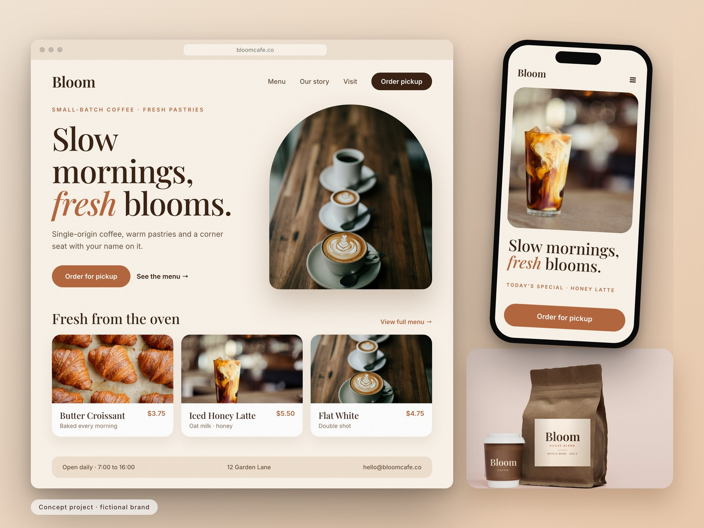

Summit Co.
An outdoor-gear storefront and social posts built around the trail.

Concept project for a fictional brand, made by Vividoro to show our range. Photography from Unsplash contributors.
The brief
An outdoor brand needs a shop that sells the adventure first and the product second, with social posts that match.
The challenge
Outdoor gear sells the adventure first. A shop that feels like a catalogue loses the feeling that makes people buy.
Our solution
A hero that puts the product in its natural setting, a tidy new-arrivals row and a social template that reuses the same photography and ember-orange accent.
How we built it
Brief
A storefront and social presence built around the trail.
Moodboard
Deep blue, slate and ember with big landscape photography.
Layout
Hero with season call to action, new arrivals, activity categories; a social post template.
Build and polish
Image grading, retouching the pack tag into the Summit mark, spacing.
Key design decisions
Product in its habitat
A backpack at sunset says more than a white-background packshot ever could.
One accent, used sparingly
Ember orange marks every action and the logo tag, so the brand is recognisable at a glance.
Social that matches the shop
Posts reuse the site's imagery and type, so every touchpoint feels like one brand.
The design system
#0E2431
#27506A
#FF7A3D
#CFE0EA
What we made

Storefront
The main screen of the concept, built around one clear action.

New arrivals
The same system, adapted to a small screen.

Social post
A supporting detail that shows how the system extends.
What this concept demonstrates
Because this is a concept, we don't claim results. These are the goals the design is built to serve.
- Sell the feeling before the spec sheet
- Make new arrivals easy to browse
- Keep shop and social visually unified

Bloom Café
Want something like this?
Tell us about your project and we'll send a free mini-audit and a fixed quote within a day.
+91 81235 23989Message us on WhatsAppStart a projectSee pricing